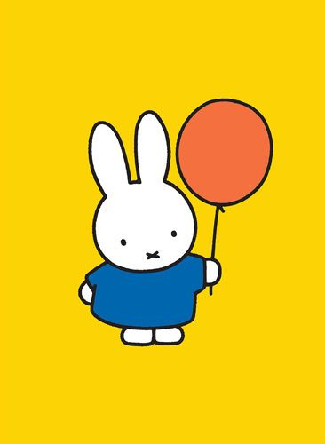

COPY CAT: PROCESS
Reference on the left, CSS recreation on the right.
Final recreation full-page and analysis and reflection.
ITERATION 1
I broke the picture into basic shapes and placed them from rough measurements.

WHAT WAS OFF:
The balloon was too tall and pointed, I gave Miffy raised arms with sleeves that are not in the reference, the right hand floated away from the shirt, and the eyes and mouth sat slightly too far apart.
ITERATION 2
I compared against the reference and adjusted the shapes by hand until they matched more closely.
- The balloon is shorter and rounder, tilted to the other side, with a smaller knot.
- The raised sleeves are gone. Both arms are now rounded white hands, with the right hand sitting on the string.
- The shirt is wider so the right hand attaches to its edge, and the head is slightly larger.
- The ears are the same size and tilt further, the eyes are closer together, and the feet and x-mouth moved a little left.